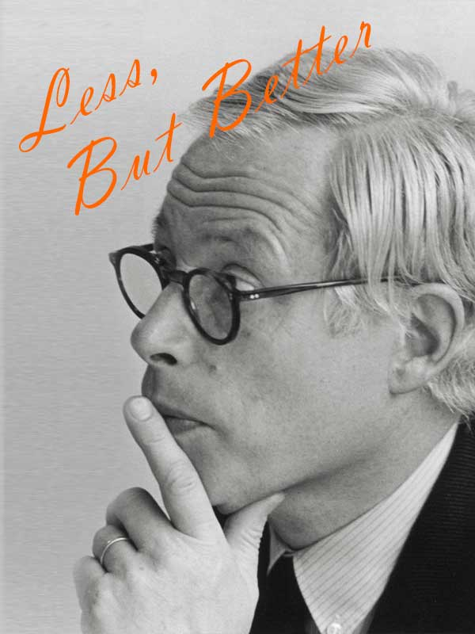

DIETER RAMS

디터람스는 지금 시대는 많은 것이 변할 수 있다라고 말합니다. 급격히 변하는 현대사회는 트렌디하고, 쉽게 망가지며, 금세 바꿔야 하는 제품이 넘쳐납니다. 이러한 시대 반영을 통해 그는 단순히 소비하기 위한 디자인이 아닌 더 나은 세계를 위해 공헌하는 디자인을 만들고자 했습니다. 이 법칙은 오늘 날 수많은 브랜드에게 영향을 미쳤습니다.
1961년부터 1955년까지 브라운에서 디자인 총괄로 그가 만들었던 제품들은 외형뿐만 아니라 사용성, 기능까지 고려하여 만들어진 브라운의 제품은 시간이 지나도 변치 않는 브랜드 가치를 제공합니다.
가구끼리 결할할 수 있는 모듈성, 오래 사용될 수 있는 지속성, 필요한 기능과 절제된 미를 보여주는 단순성, 사용친화성을 기반으로 그가 디자인함 제품들은 현대 가구에 큰 영향을 끼치며, 평생 사용할 수 있을 정도로 잘 만들어진 모듈성 가구브랜드로 평가받고 있습니다.
좋은 디자인은 혁신적이다.
좋은 디자인은 제품을 유용하게 한다.
좋은 디자인은 과시하여 드러내지 않는다.
좋은 디자인은 심미적이다.
좋은 디자인은 영속적이다.
좋은 디자인은 정직하다.
1957